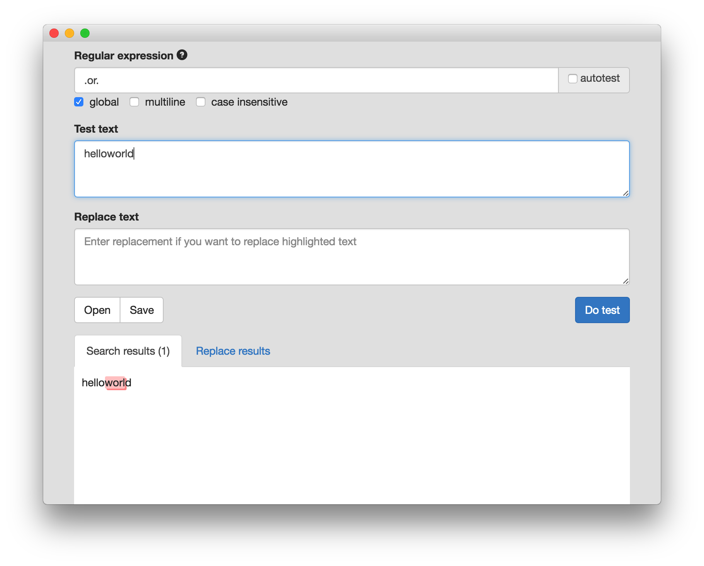

测试正则表达式
如果你不觉得正则表达式很难读写的话，要么你是一个天才，要么，你不是地球人。正则表达式的语法很令人头疼，即使对经常使用它的人来说也是如此。由于难于读写，容易出错，所以找一种工具对正则表达式进行测试是很有必要的。
代码库
不同的环境下正则表达式的一些细节是不相同的，本教程介绍的是 python 2.7 环境下正则表达式的行为，所以，我向你推荐的是 python 中一个用于方便创建正则表达式的lib，名字为：PythonVerbalExpressions，安装也很方便，直接使用 pip 安装：
pip install VerbalExpressions
调试工具
如果你想要 GUI 调试工具的话，各个平台都有很多不错的工具，但是，我个人比较喜欢跨平台的东西，所以我使用的是 Chrome 扩展，名字叫做：RegExp Tester 扩展安装地址：点击安装
扩展截图：
